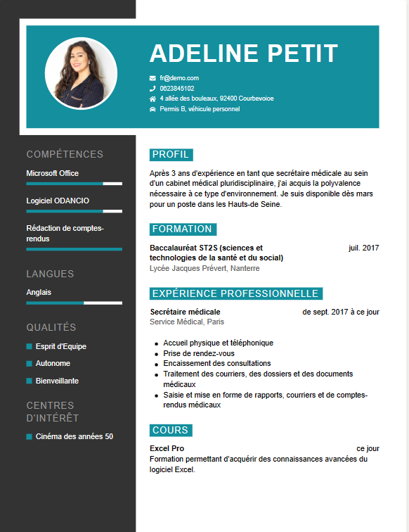

À propos
L'onglet "À propos" (ou "About" en anglais) dans une page web est généralement utilisé pour fournir des informations détaillées sur l'entité ou le sujet auquel la page est dédiée. Cela peut inclure des informations sur l'entreprise, l'organisation, le projet, l'auteur ou toute autre entité liée au contenu de la page.
Travail
L'onglet "Travail" sur une page web est généralement utilisé pour présenter les services ou les produits offerts par une entreprise, une organisation ou un individu. Cet onglet vise à fournir aux visiteurs du site web des informations détaillées sur ce que l'entité en question propose, ce qu'elle fait ou ce qu'elle vend.
Infographiste
Un infographiste est un professionnel spécialisé dans la création graphique et visuelle. Son rôle consiste à concevoir et à réaliser des éléments visuels tels que des illustrations, des logos, des images, des graphiques, des animations et des mises en page pour divers supports, tels que des sites web, des applications, des documents imprimés, des affiches, des vidéos, etc.
Photographe
La photographie permet de capturer des moments, des scènes, des objets et des personnes de manière visuelle, créant ainsi des images qui peuvent être conservées et partagées.
Monteur audio et vidéo
Un monteur vidéo et audio est un professionnel chargé de rassembler, d'éditer et de manipuler des éléments audio et vidéo pour créer des produits finaux tels que des films, des vidéos, des publicités, des émissions de télévision, des vidéos en ligne et bien plus encore.
CV
Contacts
Téléphone : +225 0777753238 / 0564012346
Adresse email : jkla68797@gmail.com
Facebook : Jojo Kla